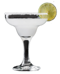

If life gives you limes, make margaritas.— Jimmy Buffett
The Margarita has a number of historical accounts listed below.
The drink is a variation of the daisy that is made the same but with brandy. Margarita means Daisy in Spanish and the 'Daisy' cocktail, repaced with tequile, became the Margarita.
In 1938, Carlos "Danny" Herrera developed the drink at his Tijuana restaurant.
Margarita Sames claimed she made the drink for friends in 1948. Her guest included Tommy Hilton who added the drink to the menu at his hotel chain.
Is was written in 1945 that the first importer of Jose Cuervo in the United States advertised with the tagline, "Margarita: it's more than a girl's name".